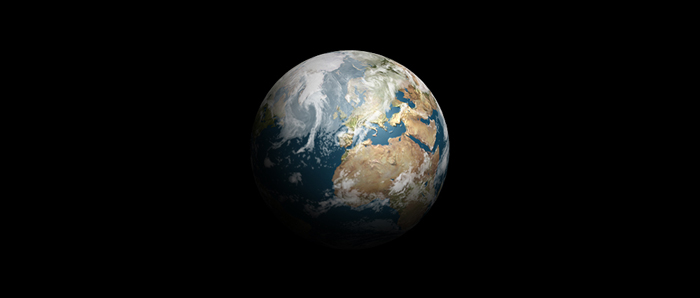
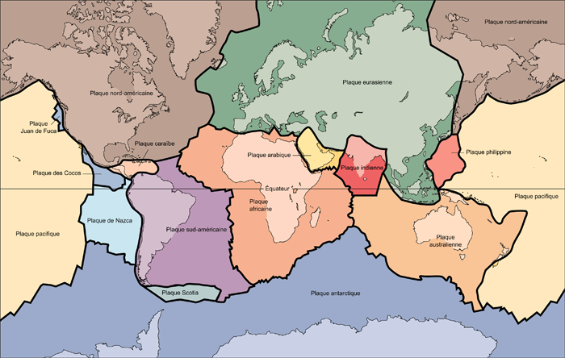

La Terre
La Terre est la troisième planète à partir du Soleil. Elle forme avec la Lune un système planétaire double. Gravitant à une distance moyenne du Soleil de 149 597 670 km, elle boucle son orbite en 365,25 jours. Elle tourne aussi sur elle-même en 23 h 56 mn 4 s. Avec un diamètre équatorial de 12 756 km, c'est la plus grosse des planètes telluriques.
Vue de l'espace, la Terre apparaît marbrée de bleu, de marron et de vert, et voilée de nuages blancs. Ces nuages, formés de vapeur d'eau, recouvrent en permanence la moitié de sa surface. C'est l'inclinaison de son axe de rotation qui détermine la succession des saisons. Quand c'est l'été dans l'hémisphère Nord, le pôle Nord est incliné vers le Soleil ; au pôle Sud, incliné en sens inverse, c'est l'hiver.
La Terre possède un puissant champ magnétique qui, en capturant les particules électrisées du vent solaire, forme les ceintures de Van Allen. Celles-ci constituent un risque potentiel pour les vaisseaux spatiaux, car elles perturbent le fonctionnement du matériel électronique.

Crédit : Mathieu Morainville
La Terre est, à notre connaissance, la seule planète porteuse de vie. Ceci grâce à la composition de son atmosphère - 76% d'azote, 21 % d'oxygène et un peu de gaz carbonique - ainsi qu'à une échelle de températures favorisant la présence d'eau sous forme gazeuse et liquide. Vapeur d'eau et gaz carbonique circulent dans notre atmosphère en un gigantesque mouvement cyclique. Cette circulation, entretenue par le rayonnement solaire, les océans et les végétaux, est à
l'origine de nos climats.
L'atmosphère est composée de plusieurs couches, de la basse atmosphère, la plus dense, à l'exosphère raréfiée qui s'étend audelà de 400 km d'altitude. Dans la ionosphère, région de la haute atmosphère, atomes et molécules sont ionisés. Cette couche, en réfléchissant les ondes radio, facilite les communications à grande distance. Lorsqu'elle est rompue par les éruptions solaires, les liaisons radio sont perturbées.
Dans une couche située entre 15 et 50 km d'altitude, l'oxygène est décomposé en ozone par le rayonnement solaire. L'ozonosphère protège la Terre de la lumière ultraviolette émise par le Soleil, qui pourrait provoquer cancers et mutations génétiques.
Les plaques tectoniques

Source : Wikipédia
La Terre est composée d'un noyau de fer et de nickel d'une température de 4 000 °C, entouré d'un épais manteau de silicates. La mince croûte rocheuse qui forme son enveloppe superficielle est morcelée en une quinzaine de plaques - océaniques et continentales. Les océans couvrent 70% de sa surface.
Les fonds océaniques sont parcourus en leur milieu par de longues chaînes montagneuses suivant la ligne de fracture des plaques. Tout au long de ces dorsales se produisent des remontées du magma provenant du manteau. Il en résulte une expansion des fonds océaniques, l'Atlantique gagnant ainsi 10 cm par an. En bordure des océans, les plaques océaniques s'enfoncent sous les plaques continentales. La poussée qui en résulte est à l'origine de la formation de massifs
montagneux comme les Rocheuses ou les Andes.
La répartition actuelle des océans et continents est due au mouvement de ces plaques. La Terre n'a pas toujours présenté le même visage. Les continents ont énormément varié depuis sa formation. Aujourd'hui encore, la mer Rouge s'élargit de 1 cm par an, l'Afrique s'éloignant peu à peu de l'Arabie.
Plan du site | Contact | Site réalisé par Mathieu Morainville.